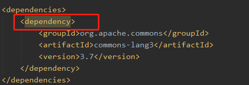
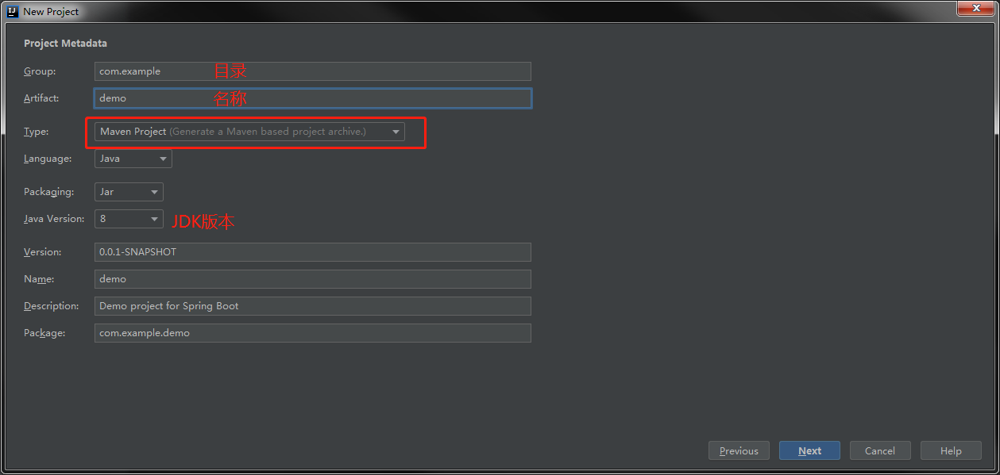
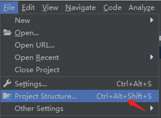
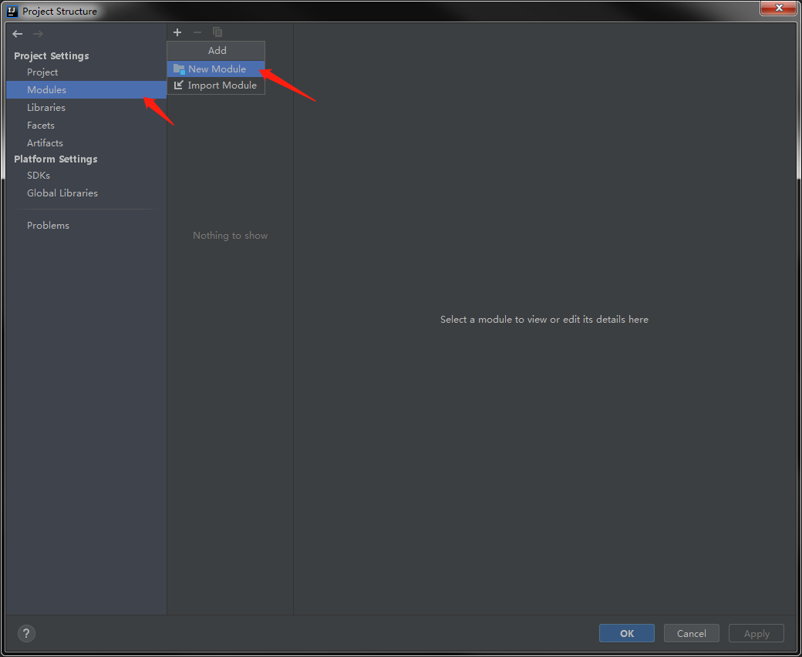
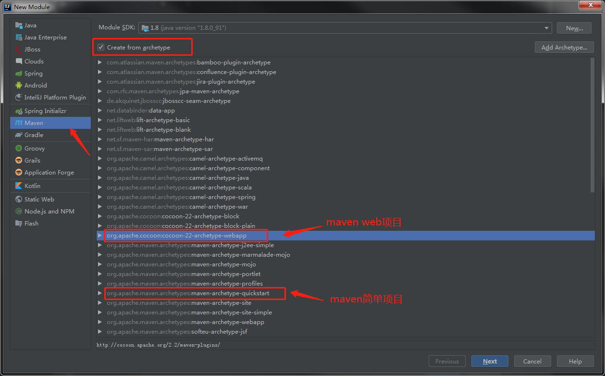
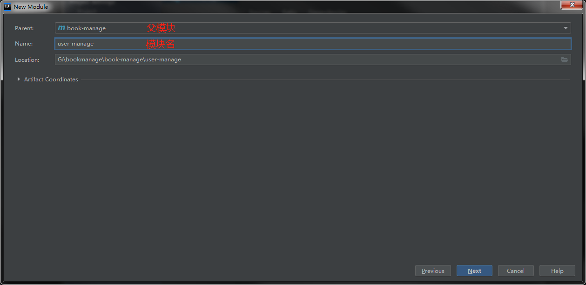
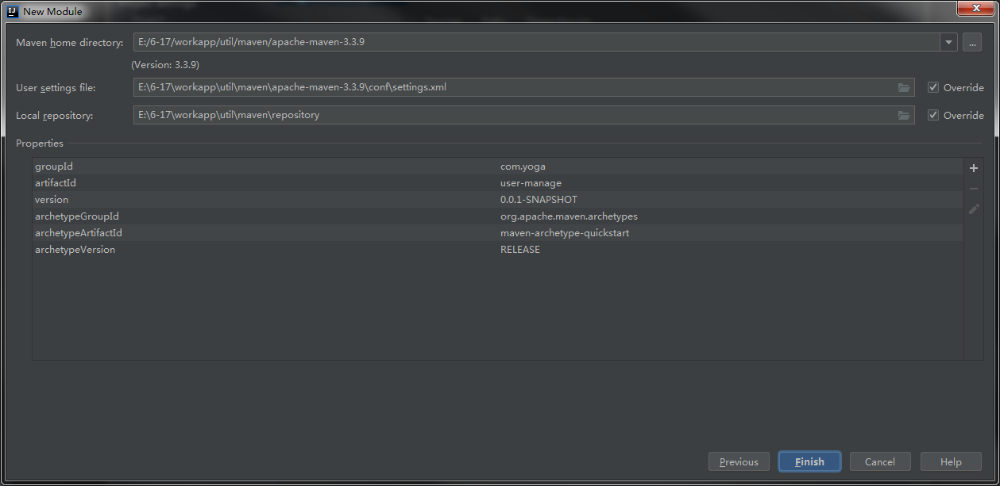
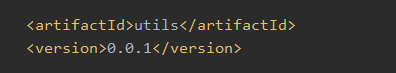

说明
Maven多模块项目,适用于一些比较大的项目，通过合理的模块拆分，实现代码的复用，便于维护和管理。尤其是一些开源框架，也是采用多模块的方式，提供插件集成，用户可以根据需要配置指定的模块。
1 | 项目结构如下： |
让每个模块独立,高内聚,低耦合.不同模块之间保持自己的完整性.
可以互相不干扰.方便以后的维护开发
子模块可以使用父模块的依赖
依赖共享关系：
1. 子模块可以使用父模块的依赖：
当父模块存在依赖时，若子模块还要添加该依赖则会有重复警告

2. 兄弟模块之间无法共享依赖：
因此多个模块使用的依赖可以提到父模块中
注：
两个模块不能相互依赖，否则效果类似死循环
会报错 ：
Error:java: Annotation processing is not supported for module cycles. Please ensure that all modules from cycle [user-manage,utils] are excluded from annotation processing
实现
1. 创建父maven项目

2.删除父模块中的src目录
3. 创建子模块

点击modules –> New Module创建子模块

选择maven 选中 Create from archetype 复选框 选择maven模板 点击Next ，若为普通模块则不需要勾选

选择父模块，修改模块名

配置maven信息

子模块调用另一个子模块的方法
如：user模块调用utils模块的方法
1. 首先为utils模块添加版本
如：<version>0.0.1</version>

2. user模块中引入utils模块
必须要有<scope>compile</scope>
1 | <dependencies> |
对应关系